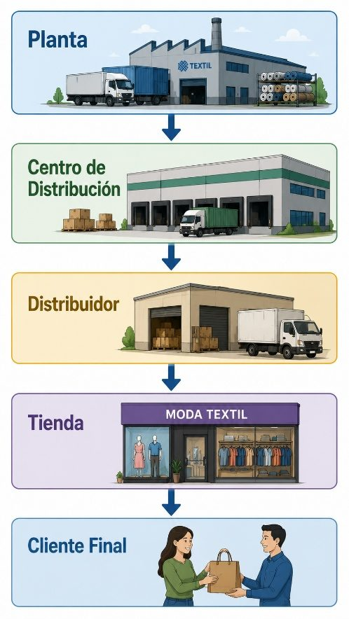

Unidad V · Tema 5.3
Blockchain, redes de distribución e Industria 4.0
La convergencia de registros inmutables por Blockchain, el diseño estratégico de redes de distribución ágiles y los pilares de la Industria 4.0 definen el estándar competitivo de la manufactura y comercialización textil en el siglo XXI.
5.10 Blockchain
El Blockchain (cadena de bloques) es un libro contable digital distribuido, descentralizado, transparente e inalterable, en el que cada transacción registrada es validada criptográficamente por una red de nodos sin intermediarios centrales.
Aplicación en el sector textil y de confección
- Trazabilidad integral de la fibra a la prenda: Certifica el origen de los insumos (algodón orgánico certificado, poliéster reciclado o lana sostenible), protegiendo la reputación de la marca contra el greenwashing.
- Cadena de custodia verificable: Constancia inalterable de cumplimiento de condiciones laborales justas en maquilas y talleres de corte y confección.
- Combate a la piratería: Autenticación de colecciones exclusivas o prendas de alta gama mediante pasaportes digitales de producto (DPP).
5.11 Redes de distribución
Una red de distribución es el conjunto articulado de instalaciones de almacenamiento (plantas, CEDIS, almacenes satélite), sistemas de transporte y canales comerciales estructurados para llevar las prendas terminadas desde las líneas de producción hasta el consumidor final con los menores costos y tiempos posibles.

Configuraciones de redes de distribución
Distribución directa
La fábrica despacha los pedidos directamente al consumidor final o tienda de marca sin pasar por intermediarios (típico del e-commerce D2C - Direct-to-Consumer).
Distribución indirecta
Involucra centros de consolidación (CEDIS), mayoristas regionales y minoristas departamentales antes de llegar a los anaqueles del comprador.
Estrategia omnicanal
Integración total de canales digitales y tiendas físicas: permite comprar en línea y recoger en tienda (BOPIS), o despachar compras web desde el inventario de la tienda más cercana.
5.12 Industria 4.0
La Industria 4.0 representa la cuarta revolución industrial, fundamentada en la digitalización completa de las cadenas productivas, los sistemas ciberfísicos, la automatización avanzada y la toma de decisiones descentralizada.
En el sector textil y de confección se materializa a través de:
- Fábricas inteligentes (Smart Factories): Maquinaria de tejido, teñido y corte interconectada que ajusta parámetros automáticamente según las especificaciones de la orden.
- Producción flexible y personalizada: Habilidad de manufacturar lotes pequeños o prendas sobre medida al mismo costo unitario que las grandes tiradas tradicionales.
- Control de calidad automatizado: Visión artificial por cámaras de alta resolución que detectan fallas milimétricas en el tejido o puntadas defectuosas a gran velocidad.
¿Sabías que...?
Las empresas líderes del sector textil utilizan algoritmos de inteligencia artificial para predecir la demanda de prendas por temporada, optimizar inventarios y reducir el desperdicio de materiales, mejorando tanto la rentabilidad como la sostenibilidad.
Comprueba tu comprensión
¿De qué forma la trazabilidad por Blockchain y los modelos de distribución omnicanal transforman la competitividad global de una marca textil en la era de la Industria 4.0?